A centerpiece has one job most people forget. It has to let the people at the table see each other and reach the potatoes.
The ones that fail are too tall, too wide or too crowded. The ones that work follow a few measurements, and after that the style is up to you.
Here are 28 centerpieces sorted by what they are built from. The rules come first, because the height and width limits apply to all of them.

Five Rules for a Centerpiece That Works at Dinner
- Stay under 12 inches or go over 30. Seated eye level is around 14 to 24 inches above the table. Anything in that band blocks faces. Low works, and so do thin stems that lift the mass above it.
- Take no more than a third of the width. On a 40-inch table that is 13 inches, which leaves room for plates, glasses and the serving dishes that arrive later.
- Build in odd numbers and three heights. Three candles, five ornaments or three vases, with one tall, one medium and one low, looks arranged. Pairs look stiff.
- Keep flame 12 inches from anything that burns. Dry pine, paper, cotton snow and ribbon all catch fast. Near them, use flameless candles or keep the gap.
- Unscented candles only on the dinner table. A pine or vanilla candle fights the food. Save scented ones for the hall.
Candles and Glass
1. Step the Hurricanes, Do Not Line Them Up
Three hurricane glasses at the same height read as a fence. Three at different heights read as a centerpiece. Aim for roughly 8, 10 and 12 inches, as this trio does.
Choose pillars about half an inch narrower than the glass so the flame gets air, and hide the candle base under pinecones, cranberries or faux snow.
A real flame inside glass is fine on a table. Around long sleeves and reaching children, a flameless pillar with a remote is the easier evening.
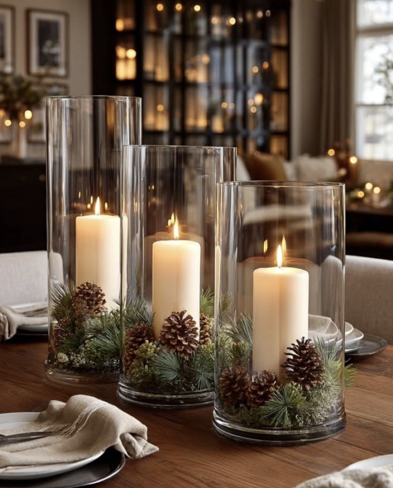
2. Line the Trough Before the Candles Go In
A wood trough is a ready-made runner, and wax ruins it in one dinner. Line it with foil or a plastic liner, and stand each pillar on a small candle plate.
Use pillars of three heights, tuck pine and pinecones into the gaps, as this one does on a linen cloth, and check that a plate and a glass still fit on both sides before guests arrive.
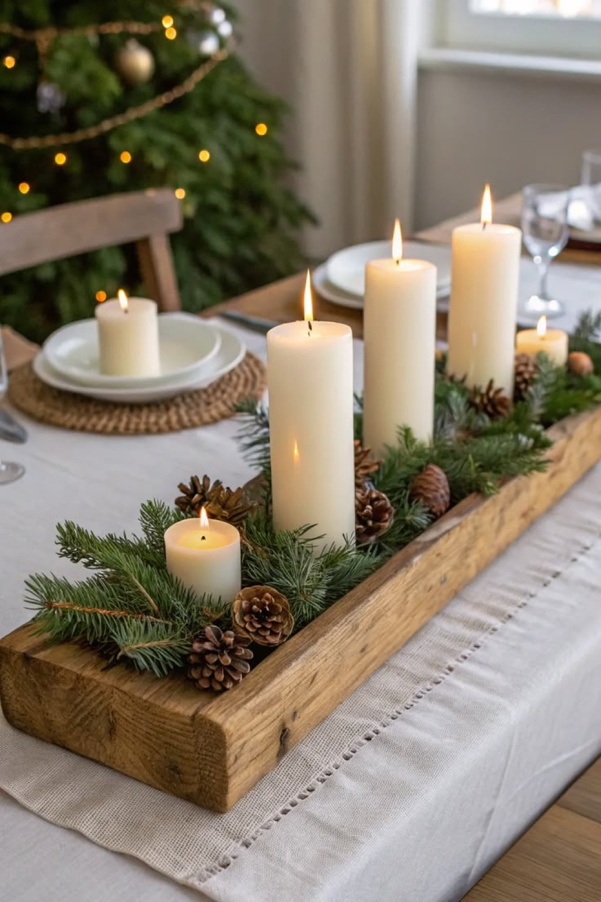
3. Drill a Log for Tealights
This is the cheapest centerpiece here and the one people photograph. A dry log about 18 inches long, a drill and an afternoon.
Use a 1.5-inch Forstner bit and drill each hole three-quarters of an inch deep, spaced evenly along the top. A tealight sits flush, as the six in this log do.
Fresh wood smokes and can scorch. If the log is not fully seasoned, use LED tealights.
Set it on a plain white runner. Anything patterned underneath competes with the bark.
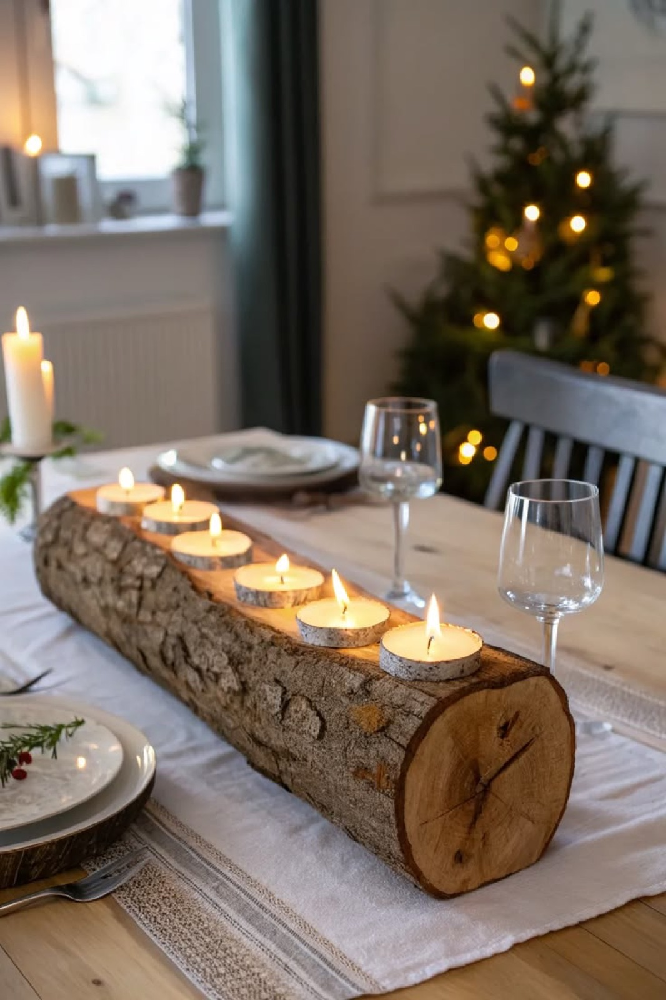
4. Lift Short Candles on Wood Slices
A short candle disappears on a long table. Raise it on a wood slice 8 to 10 inches across, and stack a smaller slice underneath for a second height, as the three stands in this photo do.
Set a glass holder or LED candle in the center and ring it with pine, pinecones and red berries. The berries are what make it read as Christmas and not autumn.
Seal raw slices with a clear spray before the first use. Unsealed wood drinks wax and moisture and stains within a week.
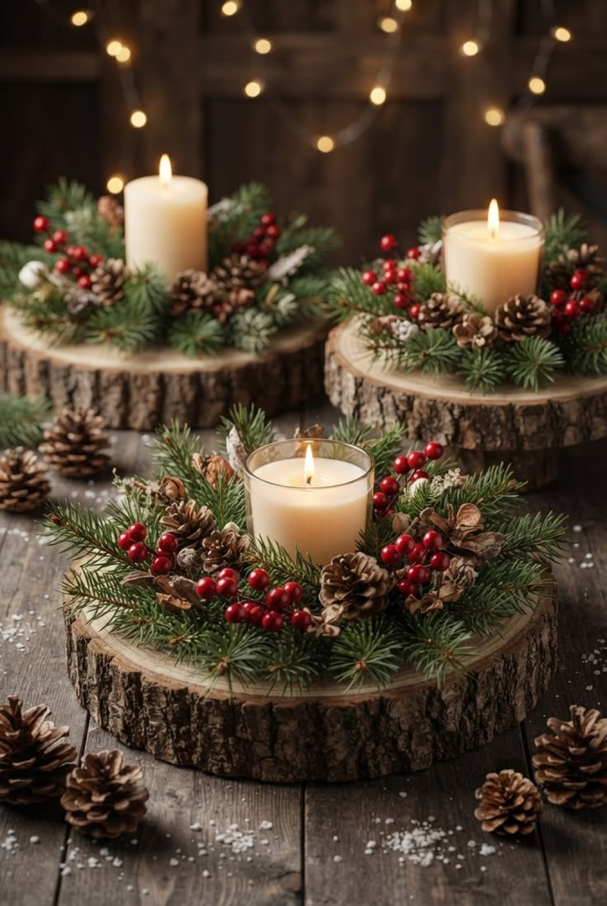
Christmas Berry Pine Candle Rings, 4-Piece
Shop on Amazon5. Float Candles Over Cranberries
Three cylinder vases, water, a bag of cranberries and three floating candles. The cost is under ten dollars and it looks like a florist did it.
Fill the water to two inches below the rim so wax cannot overflow, drop in a pine sprig, and change the water every three days so the berries stay bright, as they are here. Frozen cranberries sink less than fresh.
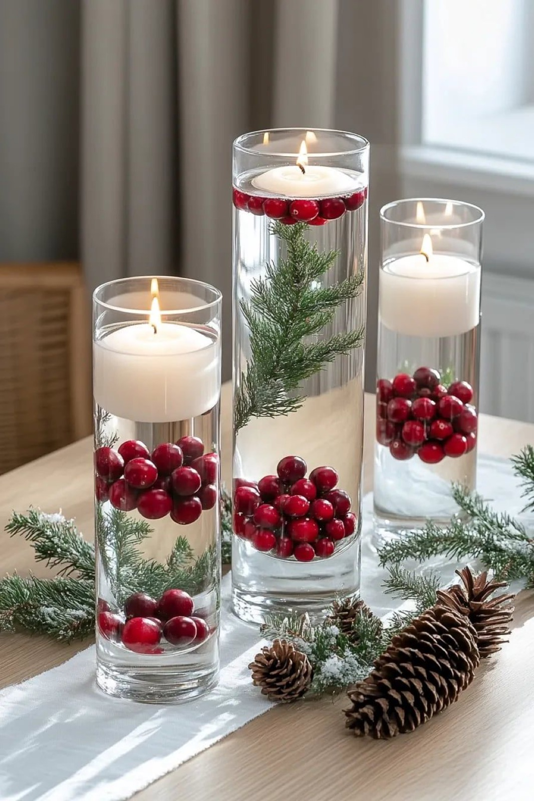
6. Pack a Hurricane With Ornaments
A tall glass cylinder filled with ornaments is a ten-minute centerpiece that needs no greenery to look finished.
Lights go in first. Thread battery fairy lights through the cylinder and leave the pack at the bottom, then fill with shatterproof balls in two or three colors, as this one does in red, green and silver, with pinecones in the gaps.
Set it on a round wood tray with pine around the base, and keep it off the main dinner table. At 16 inches tall it belongs on a sideboard or console.
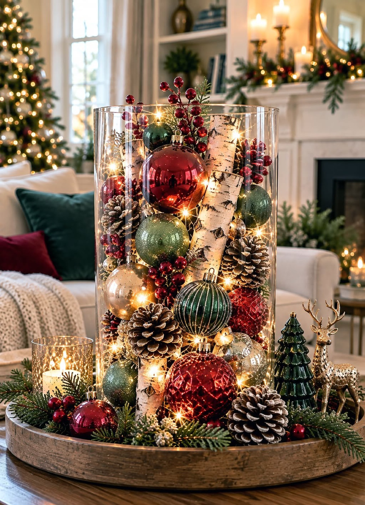
7. Run the Tapers Down One Side of the Garland
Tapers down the middle of a garland end up with flame in the greenery. Set them along one side in brass holders of different heights, as these six are at the end of a pine garland.
Keep each flame at least 12 inches from the nearest needle, and use dripless candles so the cloth survives.
Weave warm white fairy lights through the garland for glow with no flame at all. That is what lets this one run the length of the table.
Light the tapers when people sit down, not before. A ten-inch taper burns for about six hours, and an hour of that at an empty table is waste.
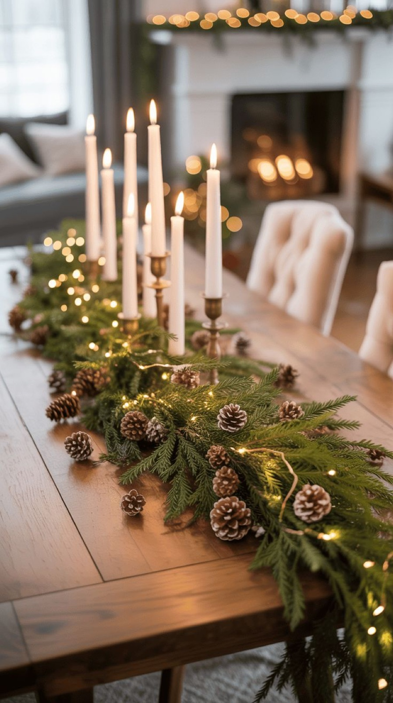
8. Burn Real Candles Inside a Lantern
If you want a real flame near pine, put it behind glass. A lantern with glass panels and a flat base is the one safe way to do it.
Use two lanterns of different heights, put a pillar or LED candle inside each, and build the pine, pinecones, ornaments and berries around the outside, as this rustic table does. Nothing goes inside the lantern but the candle.
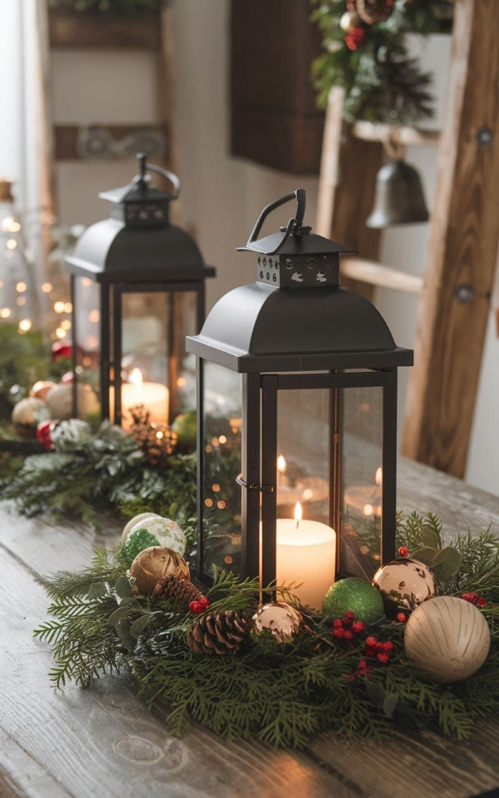
Garlands and Natural Runners
9. Keep a Table Garland Under Six Inches
A garland that stands six inches off the table still lets people see across it. Pile it higher and you have a hedge.
Weave in pinecones and a strand of warm white battery lights, and tuck the pack under a leaf. This eucalyptus garland on a plank table set with white plates shows how little height it needs.
Fresh eucalyptus dries and curls in three or four days. Use faux if the table is set before the day.
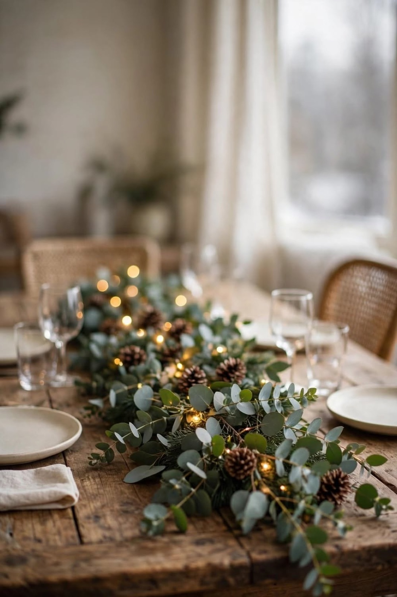
Faux Eucalyptus Garland, 6 Ft, 2-Pack
Shop on Amazon10. Buy the Garland Already Lit
Stringing lights through a garland takes an hour and never looks even. A pre-lit garland with a battery pack and a timer skips the job.
A five to six foot length suits most dining tables, and a linen runner underneath, as here, protects the wood from needles and wire. Choose eucalyptus with red berries if the room is neutral, and plain eucalyptus if the table setting already has color.
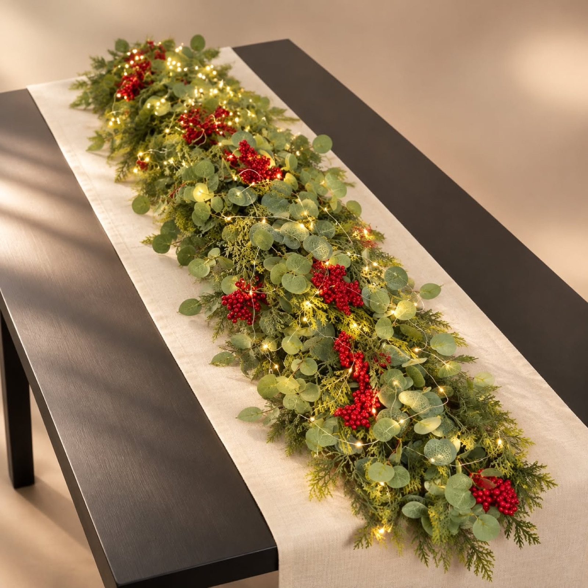
11. Fill a Dough Bowl With Oranges and Cinnamon
A dough bowl of oranges, cinnamon sticks and star anise scents the room before anyone has sat down. It is also one of the few centerpieces you can eat afterward.
Whole oranges last about two weeks at room temperature. Dried slices, which this bowl mixes in, take about three hours at 200°F.
Layer pine and eucalyptus under the fruit so the green shows between the oranges.
Swap the pine halfway through the season. It browns long before the oranges do.
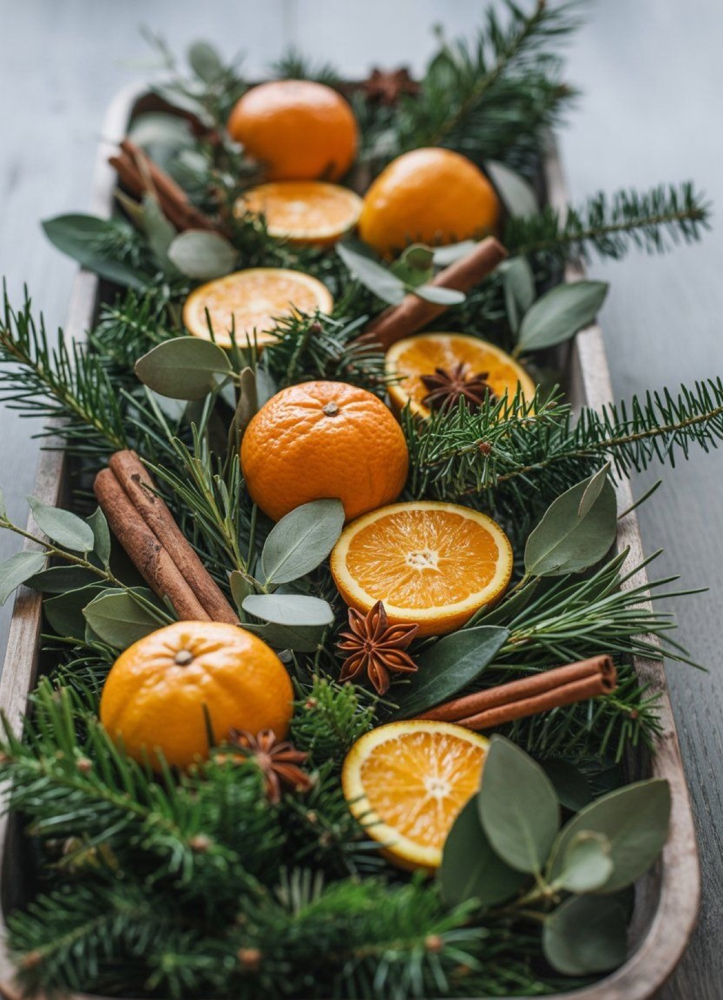
12. Bake Foraged Pinecones Before They Come Inside
Pinecones from the yard carry sap and small insects. Spread them on foil and bake at 200°F for 45 minutes, and both problems are solved.
Pile them in a wood tray with handles, add cinnamon sticks and a few pine sprigs, as this one does on a kitchen island, and a drop of cinnamon oil on one cone scents the whole tray.
A tray with handles moves from the island to the coffee table without rebuilding it.
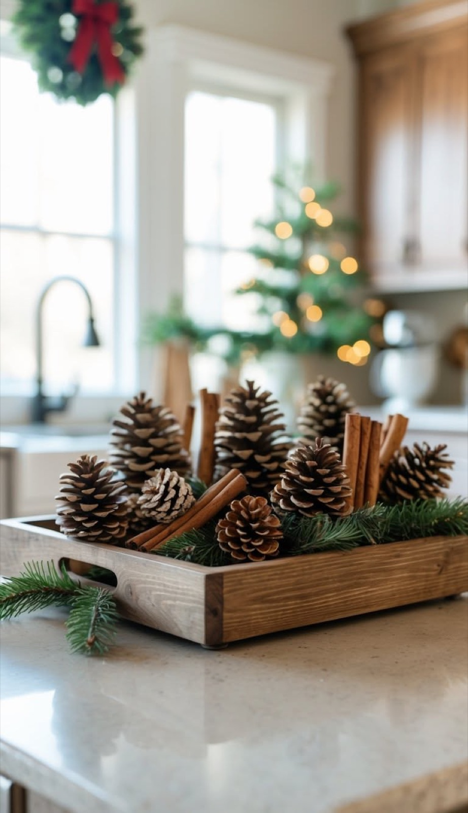
13. Let the Food Be the Centerpiece
A grazing garland of figs, pears, grapes, nuts and cheese set among pine and pinecones replaces both the centerpiece and the appetizer table.
Keep the food in small bowls and on boards, as this table does, never directly on the greenery. Refill from the kitchen, and clear the cheese after two hours.
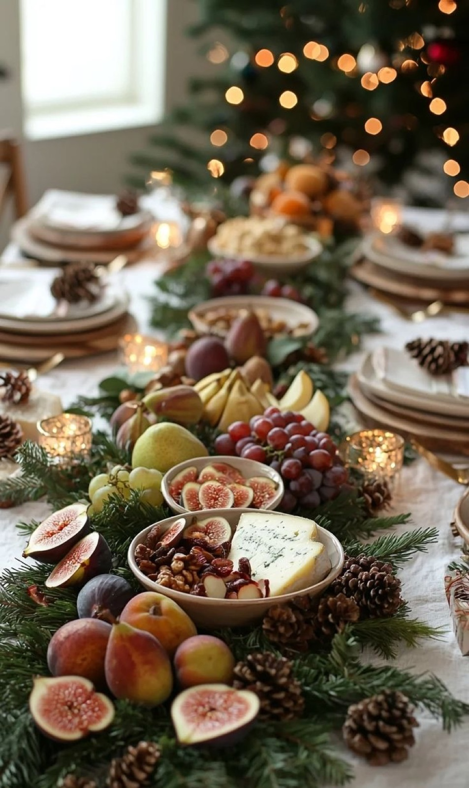
Vases, Branches and Florals
14. One Kind of Stem Looks Fuller Than Five
A vase of one stem type looks full and expensive. A vase of five types looks like leftovers.
Cut flocked red berry stems to about one and a half times the height of the vase, fan them out and open each branch. A cream ribbed vase, as here, keeps the red as the only color.
Repeat the same vase and stem on the sideboard, and the room reads as one idea.
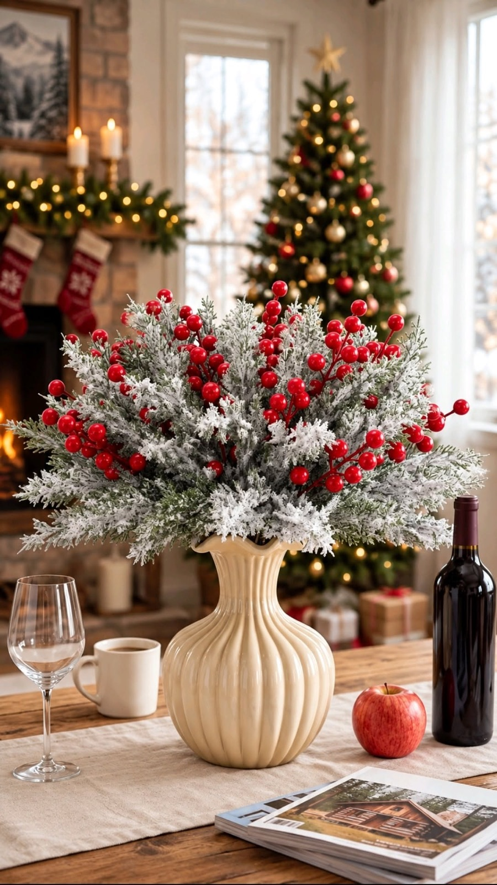
15. Hang Ornaments From Bare Branches
Branches give height without bulk, which is how a centerpiece gets above the 30-inch line without blocking anyone.
Use three glass cylinders of different heights filled with twigs, and hang ornaments under two inches wide so the branches do not bend. The gold and silver balls on these branches are about that size.
Twine a strand of fairy lights around the base of the vases rather than up the branches, where the wire shows.
Weight the vases with clear marbles or water. Top-heavy branches tip when someone bumps the table.
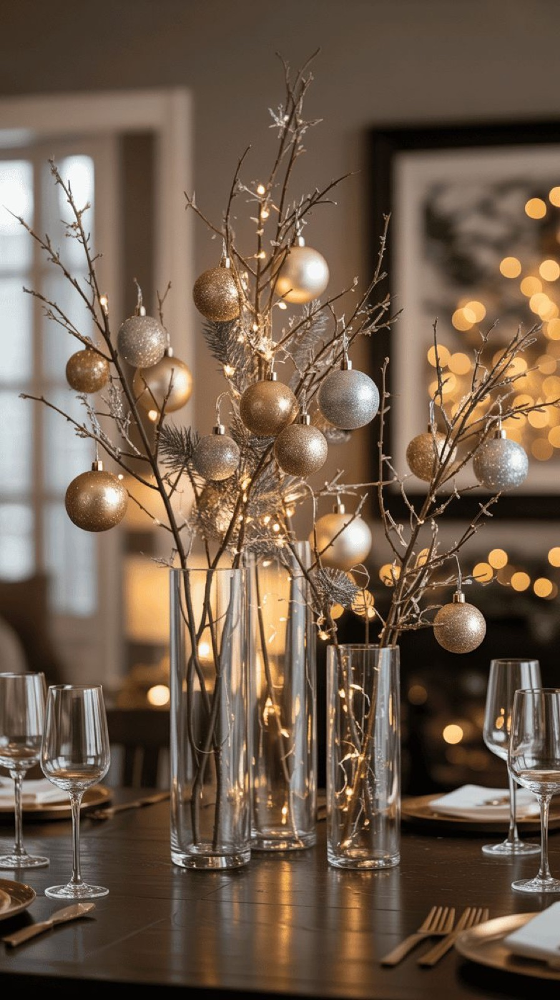
16. Soak the Foam, Then Place the Biggest Bloom First
Loose stems in a wide bowl slump by the second day. Floral foam holds them where you put them, and the largest blooms go in first, dead center.
Work out from there with smaller flowers, silvery pine and gold ornament picks, as this gold bowl does with white roses in front of a mantel. Faux roses hold the look all month, and fresh ones need the foam kept wet.
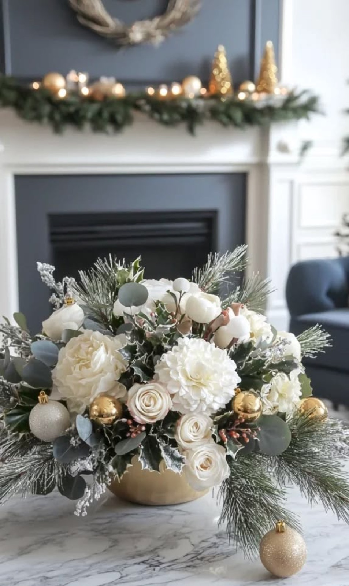
17. Warm Up Silver With Fresh Pine
Silver on its own reads cold. Fresh-cut pine fixes that, and the two together, as in this silver vase, look like a shop window.
Hang lightweight silver balls from the branches with fine wire, and keep the pine in a little water so it holds its needles for two weeks.
A pair of tapers and a small silver reindeer on either side balance the weight of the vase.
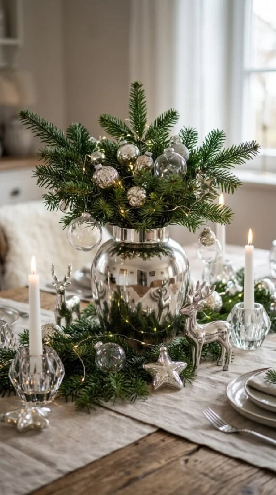
18. Give the Objects a Tray
The difference between a pile of objects and a vignette is an edge. A round brass tray gives the magnolia, candles, nut bowl and small brass horse in this photo somewhere to belong.
Pick one tall piece, one medium and a few low, keep to odd numbers and one metal, and stick felt pads under the tray so the finish does not scratch the table.
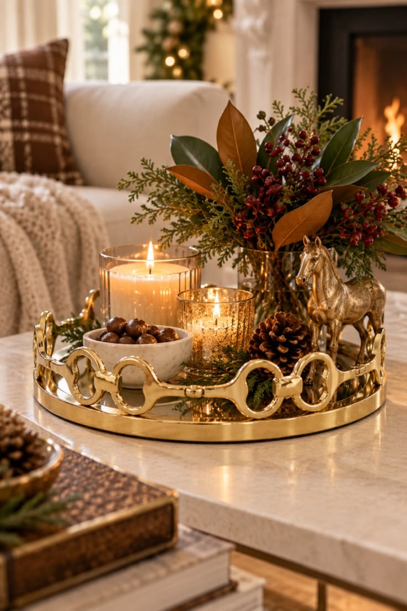
Round Brass Decorative Tray, 13.4 Inch
Shop on AmazonRed Magnolia Christmas Picks with Berries, 2-Pack
Shop on Amazon19. Repeat One Plant Down the Table
The cheapest bold centerpiece is the same plant three or five times. Red poinsettias in matching white pots, as on this table, cost less than one florist arrangement.
Take off the foil sleeve so water does not pool at the roots, and water only when the top inch of soil is dry.
Keep them away from cold drafts, which make them drop leaves within days.
Poinsettias are mildly irritating to cats and dogs if chewed. Put them on the table, not the floor.
White Ceramic Planter Pots, 6 Inch, 4-Pack
Shop on AmazonRed Velveteen Poinsettia Stems, Artificial
Shop on AmazonTrays and Tabletop Trees
20. Group Figures by Height on a Tray
Small figures scattered across a table look like clutter. The same figures on a tray look collected.
One tall piece, such as the nutcracker here, two or three medium trees, and a few low ornaments and bells. Odd numbers, and the tallest at the back.
Polish the silver before you set up, and add one candle so the metal has something to reflect.
Silver Serving Tray, Vintage Metal Platter
Shop on AmazonWooden Nutcracker Ornament, 12 Inch
Shop on Amazon21. Put Silver on a Dark Cloth
Silver on a white cloth disappears. On deep green or navy, as in this photo, it glows.
Stand three flameless pillars in glass on an 18 to 20 inch tray, fill the gaps with clear and mercury glass ornaments and a few fairy lights, and add one star for height. Flameless keeps the tray cool enough to move mid-meal.
Modern Round Serving Tray, 15.5 Inch, White and Silver
Shop on AmazonFlameless LED Ivory Pillar Candles, Set of 3
Shop on Amazon22. Keep a Mirrored Tray to Five Pieces
A mirror doubles everything on it, so five objects look like ten. Stop at two glitter trees, a silver deer and a couple of pinecones, as this one has.
Glitter sheds. Wipe the mirror with a dry cloth between uses, and keep the tray where it catches light from a window or lamp.
A tray with a raised chain edge, as here, keeps the pinecones from rolling off when the table is bumped.
This one lives on a coffee table or sideboard. On a dinner table, glitter ends up in the gravy.
Glitter Cone Tabletop Christmas Trees, Silver, 3-Pack
Shop on AmazonSilver Mirror Decorative Tray, 11 x 14 Inch
Shop on Amazon23. Let a Small Tree Replace the Arrangement
A lit tree 18 to 24 inches tall clears seated eye level and does the job of a whole arrangement.
Wrap the pot in burlap tied with twine, as this one is, and add holly sprigs and a few short candles around the base. Battery lights, with the pack where you can reach it without lifting the tree.
A tree this size needs nothing else. Add a runner and stop.
Pre-Lit 2ft Tabletop Christmas Tree with Burlap Base
Shop on AmazonNatural Burlap Fabric Roll
Shop on AmazonCandy, Gingerbread and Tiny Villages
24. Stand Candy Canes Hook-Up in a Vase
Fill a tall glass vase with candy canes, hooks up, tie a wide red ribbon around it, and you are done in five minutes, as this one on a snowflake cloth shows.
Buy individually wrapped canes, which do not go sticky in a warm room, and drop a few marbles or spare canes in the bottom for weight.
Large Glass Apothecary Jar, 15 Inch
Shop on AmazonRed Velvet Wired Ribbon, 2.5 Inch, 25 Yards
Shop on Amazon25. Build the Gingerbread a Week Early
Gingerbread houses assembled on the day collapse at the table. Build them a week ahead with stiff royal icing and let them cure.
Line the houses along a linen runner with frosted bottle brush trees between them, as here, and dust fake snow along the base.
Steam and humidity soften the walls. Keep the runner away from the kitchen doorway.
These are decoration, not dessert. After a week on a table they are not food.
Lighted Frosted Bottle Brush Trees, Set of 2
Shop on AmazonFake Snow Blanket Rolls, 3-Pack
Shop on Amazon26. Frame a Small Scene With Cotton Snow
A single gingerbread house looks lost on a bare table. A rimmed tray filled with quilt batting gives it a frame, as this scalloped wood tray does with a house, wood trees and a vase of red berries.
Spread the batting to the edges and set the house slightly off center so the trees have room.
Batting, gingerbread and dried berries all burn. Keep candles at least a foot away.
Fake Snow Blanket Rolls, 3-Pack
Shop on AmazonSnow Flocked Red Berry Pinecone Picks, 10-Pack
Shop on Amazon27. Cover the Village With a Cloche
A glass cloche keeps a miniature village safe from dust and small hands, and lifts it onto a wood pedestal, as here on a plaid runner. Keep the whole thing 12 to 14 inches tall so it stays under eye level.
Cluster the houses with bottle brush trees and a pinch of faux snow, and lift the dome by its knob with two hands. A cloche dropped on a wood table does not survive.
Glass Cloche Dome with Wood Base, 9 Inch
Shop on AmazonCeramic Christmas Village Houses Set, LED Lit
Shop on Amazon28. Use Three Cloches, Not One
One cloche looks like a specimen. Three of different sizes, as on this windowsill, look like a display.
Fill each with something different: a small tree, pinecones, a glowing orb or moss. Use battery micro lights with a timer, since no cord fits under a dome.
Group them in odd numbers on a windowsill or console, where the glass catches the light.
Glass Cloche Dome with Wood Base, 9 Inch
Shop on AmazonBattery Micro LED Fairy Lights, Warm White
Shop on AmazonCommon Mistakes (and Fixes)
- Mistake: a centerpiece at face height. Fix: keep it under 12 inches, or lift the mass above 30 inches on thin stems or branches.
- Mistake: nowhere to put the platters. Fix: hold the centerpiece to a third of the table width, and test it with the serving dishes before the day.
- Mistake: scented candles next to the food. Fix: unscented only on the dinner table. Scented candles go in the hall or the living room.
- Mistake: a real flame beside dry pine or cotton snow. Fix: keep a 12-inch gap, use a lantern, or switch to flameless candles near anything natural.
- Mistake: objects set straight on the tabletop. Fix: give them a tray, runner or board so the arrangement has a clear edge and can be moved in one piece.
Where to Start
One table needs one centerpiece. Choose a style, build it a few days ahead, and leave only the candles and the food for the day itself.
The centerpiece that looks best on Christmas is the one that was finished on the 22nd. Nobody should be gluing a twig while the guests take their coats off.